Loading ...
|
4-2-3-1
|
Scotland | 0 | - | 3 | Brazil |
4-3-3
|
| HT 0-2 | ||||||
|
FIFA World CupThursday 25 June 2026
|
||||||
- Venue
- Miami Stadium
- Attendance
- 64,478
- Referee
- César Arturo Ramos Palazuelos
Substitution46'
A. Robertson
K. Tierney
- 2
Substitution82'
N. Patterson
A. Ralston
B. Gannon-Doak
R. Christie
Yellow card89'
R. Christie
- 2
Substitution90+1'
J. McGinn
F. Curtis
L. Shankland
C. Adams
Whistle45+7'
45+7'
Goal7'
Vinícius Júnior
Assist: Rayan
Goal45+3'
Vinícius Júnior
Assist: Bruno Guimarães
Goal60'
Matheus Cunha
Assist: Bruno Guimarães
Yellow card62'
Danilo
Substitution65'
Casemiro
Fabinho
Substitution66'
Lucas Paquetá
Gabriel Martinelli
Substitution76'
Matheus Cunha
Neymar
- 2
Substitution82'
Rayan
Endrick
Douglas Santos
Alex Sandro
Yellow card82'
Fabinho
Scotland | |
|---|---|
Goalkeeper | |
| 1 | A. Gunn |
Defender | |
| 3 | A. Robertson 46' |
| 13 | J. Hendry |
| 22 | N. Patterson 82' |
| 26 | S. McKenna |
Midfielder | |
| 4 | S. McTominay |
| 7 | J. McGinn 90+1' |
| 17 | B. Gannon-Doak 82' |
| 19 | L. Ferguson |
| 23 | K. McLean |
Forward | |
| 20 | L. Shankland 90+1' |
Substitutes | |
| 6 | K. Tierney 46' |
| 10 | C. Adams 90+1' |
| 11 | R. Christie 82'89' |
| 24 | A. Ralston 82' |
| 25 | F. Curtis 90+1' |
Brazil | |
Goalkeeper | |
| 1 | Alisson Becker |
Defender | |
| 3 | Gabriel Magalhães |
| 4 | Marquinhos |
| 13 | Danilo 62' |
| 16 | Douglas Santos 82' |
Midfielder | |
| 5 | Casemiro 65' |
| 8 | Bruno Guimarães |
| 20 | Lucas Paquetá 66' |
Forward | |
| 7 | Vinícius Júnior 7'45+3' |
| 9 | Matheus Cunha 60'76' |
| 26 | Rayan 82' |
Substitutes | |
| 6 | Alex Sandro 82' |
| 10 | Neymar 76' |
| 17 | Fabinho 65'82' |
| 19 | Endrick 82' |
| 22 | Gabriel Martinelli 66' |


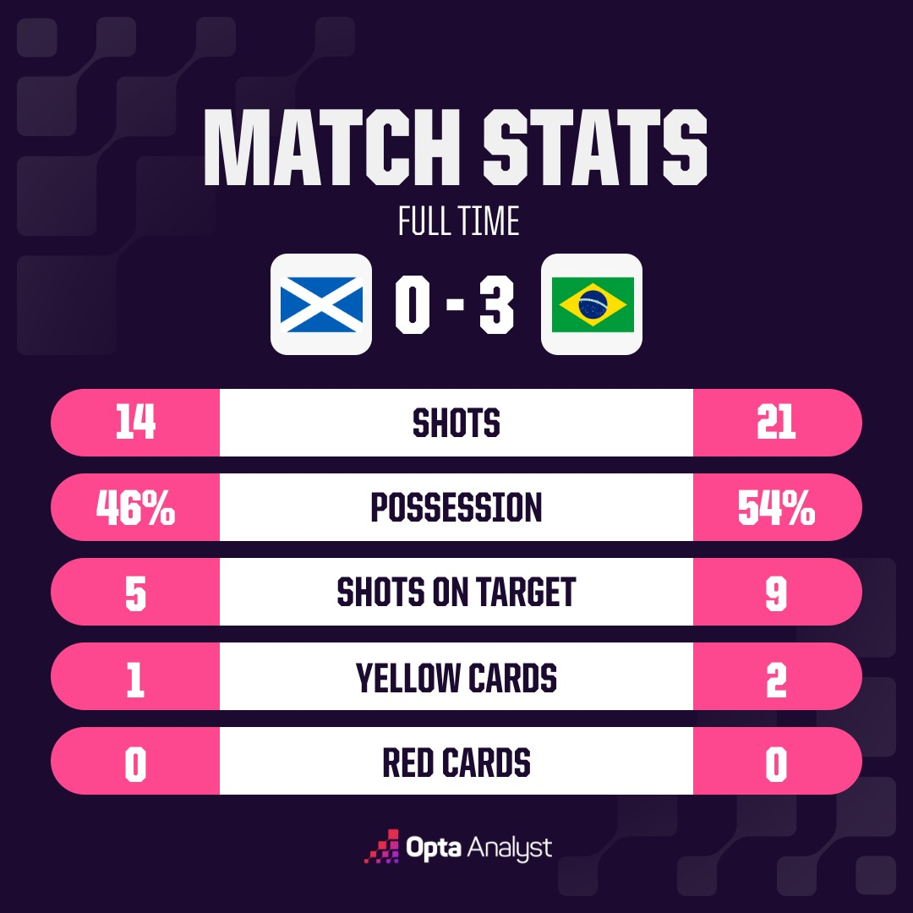
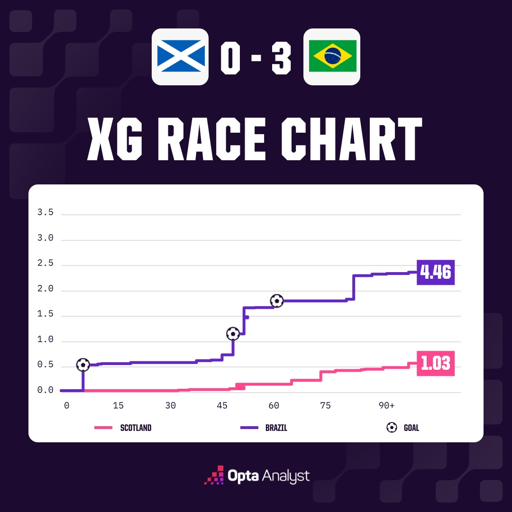
98'
Brazil are undefeated in their last 5 games in the FIFA World Cup, their last joint longest unbeaten streak was from 12th June 2014 to 4th July 2014.
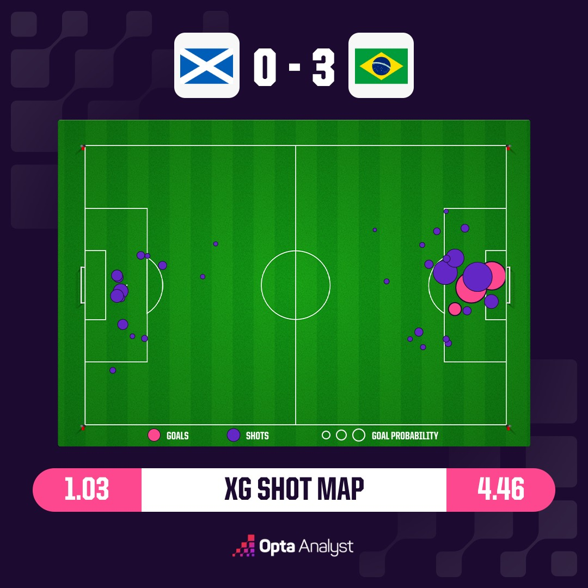
90+7'
FULL-TIME! That’s it for this game, as the referee blows the final whistle, with Brazil getting the better of Scotland 0-3.
90+7'
Set-piece after set-piece - Scotland are turning up the pressure as they search for a breakthrough.
90+7'
Free-kick! A foul from Alex Sandro on Ryan Christie. It is well away from Brazil’s goal, so it is unlikely to result in a chance for Scotland.
90+6'
Shot blocked! Vinícius Júnior unleashes an attempt at goal, but the ball does not reach its target thanks to Findlay Curtis, who makes a solid block to stem the danger – for now.
90+6'
Alisson Becker has made 5 saves, the first time he has made at least 5 saves in a match in the FIFA World Cup since facing Korea Republic on 5th December 2022 (5 saves).
90+6'
Scotland need a goal fast to get back into this game, but they will not get one with finishing like that! Scott McTominay was in a great position, but could not apply the finish.
90+5'
A free-kick to Scotland, as Gabriel Martinelli goes in and fouls Lewis Ferguson. However, Brazil will not mind giving one away in this area too much, with plenty of distance to their goal.
90+2'
A foul from Anthony Ralston on Vinícius Júnior sees Brazil win a free-kick, but it is not in a dangerous position, so Scotland should be confident they can defend it easily enough.
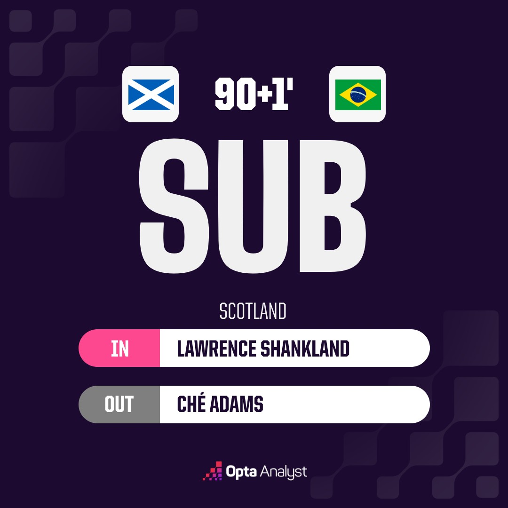
90+1'
Scotland are making a tactical change. Lawrence Shankland is leaving the field and in their place comes Ché Adams – we will soon see if this switch has the desired impact.
90+1'
The Scotland manager is looking to the substitutes’ bench, bringing on Findlay Curtis in place of John McGinn. Will the change make a difference? Let’s find out!
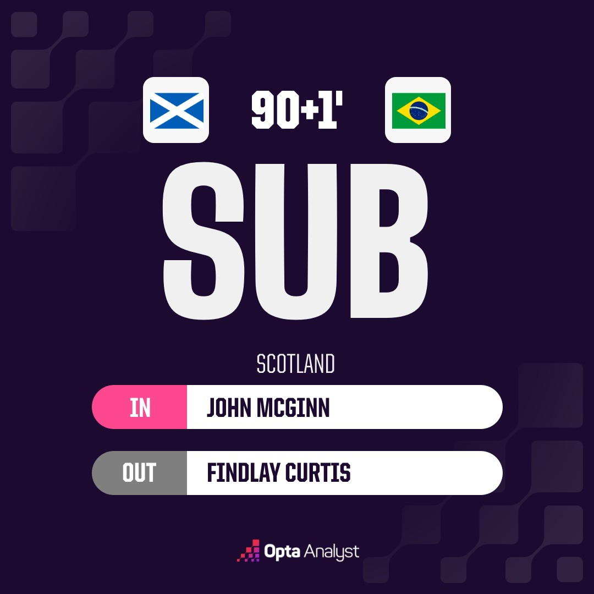
90+1'
Good play from Lawrence Shankland, who draws a foul from Gabriel Martinelli to hand Scotland a free-kick in a dangerous position. Will they create something from this set-piece?
90+1'
Brazil are having plenty of the ball, with 72.89% possession in the last 15 minutes. However, they have been unable to transfer that possessional dominance into a goal during that period.
90+1'
Angus Gunn has made 5 saves, his highest total in a single match in the FIFA World Cup.
90+1'
SHOT! Neymar manages to get a shot off from inside the area, but although it was heading in, they cannot get enough on it to beat Angus Gunn, who makes the save.
89'
BOOKING! Yellow card for Ryan Christie, who is penalised for a foul. The referee waves away their remonstrations, and now they will have to be careful.
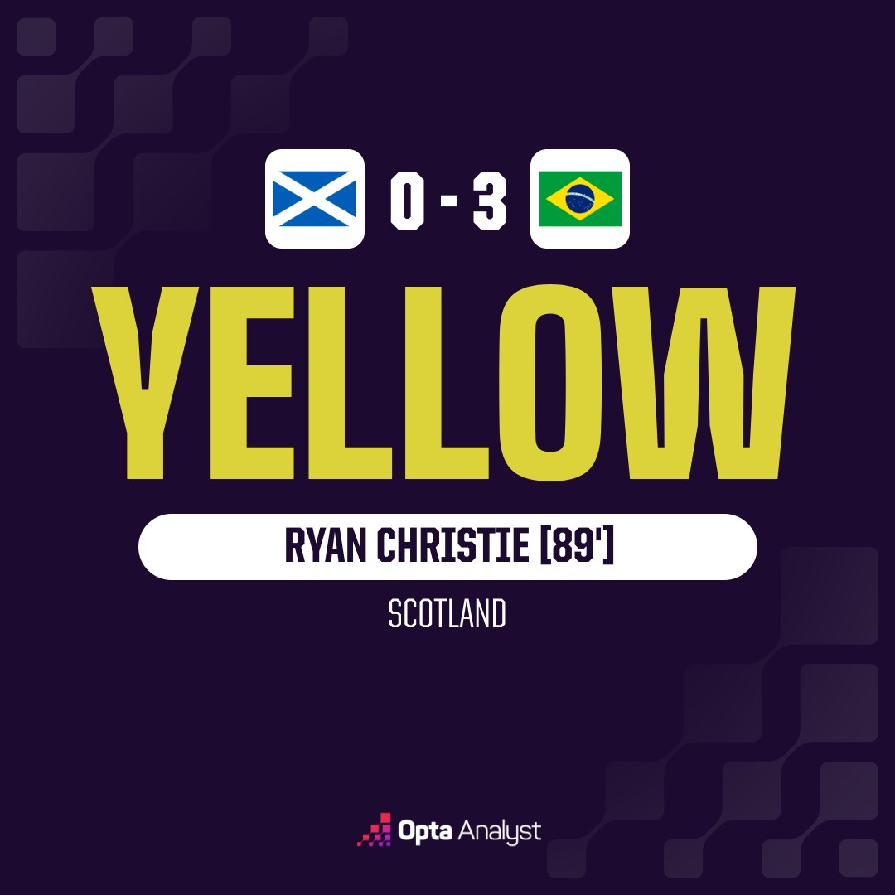
89'
Good play from Neymar, who draws a foul from Ryan Christie to hand Brazil a free-kick in a dangerous position. Will they create something from this set-piece?
89'
SHOT! Anthony Ralston manages to get a shot off from inside the area, but although it was heading in, they cannot get enough on it to beat Alisson Becker, who makes the save.
87'
A rash challenge from Lewis Ferguson, who sends Bruno Guimarães tumbling, giving Brazil a free-kick. It is not in a threatening position, but it gives them a chance to get back on the ball.
86'
That might have been going in! A fantastic block from Scott McKenna, who gets in the way of a goal-bound effort from Gabriel Magalhães. Would the goalkeeper have been beaten? We will never know.
84'
Great block from Endrick, as they get in the way of an attempt from Kieran Tierney that might have been set to cause the goalkeeper some problems. Solid defending from the Brazil player.
83'
That is a disappointing effort from Ryan Christie, who went for glory but got their attempt wrong, and the shot sailed off target. A frustrating moment for Scotland.
82'
That is a booking for Fabinho, who has received their first yellow card. They are not happy with the decision, but it is done now, and they will have to be careful for the rest of this game.
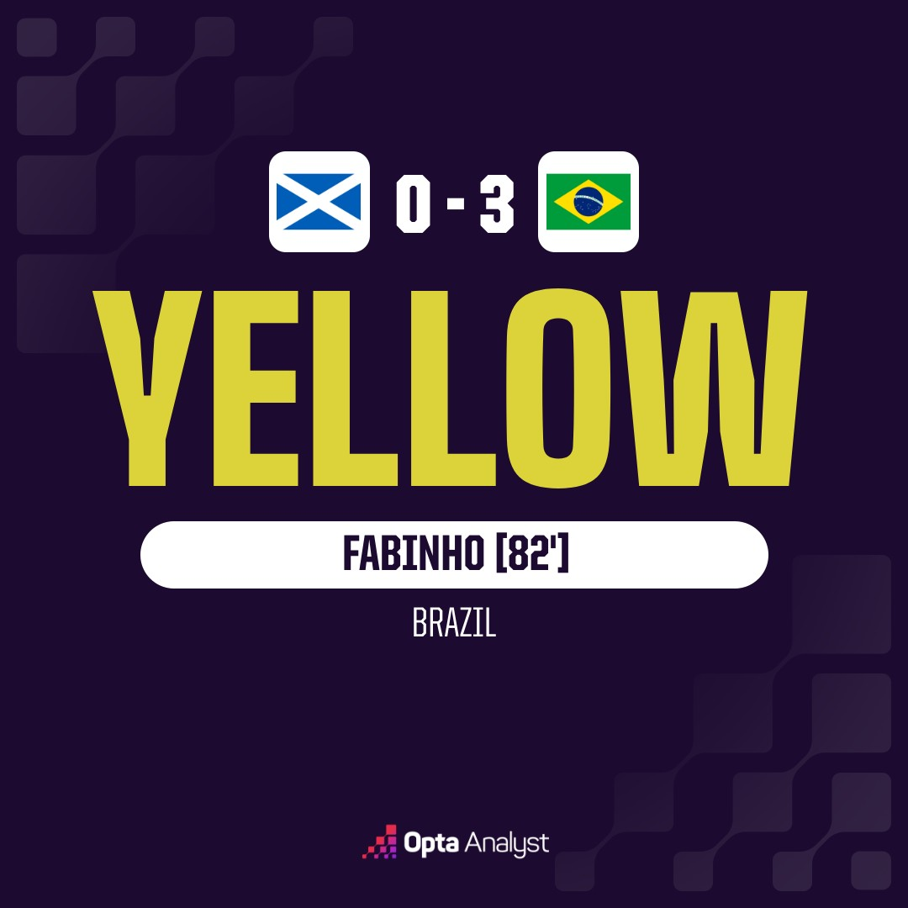
82'
A rash challenge from Fabinho, who sends Kenny McLean tumbling, giving Scotland a free-kick. It is not in a threatening position, but it gives them a chance to get back on the ball.
82'
The Scotland manager is looking to the substitutes’ bench, bringing on Ryan Christie in place of Ben Gannon-Doak. Will the change make a difference? Let’s find out!
82'
Substitution! Alex Sandro replaces Douglas Santos for Brazil as the manager shuffles the pack. Can Alex Sandro make an impression as this match continues?
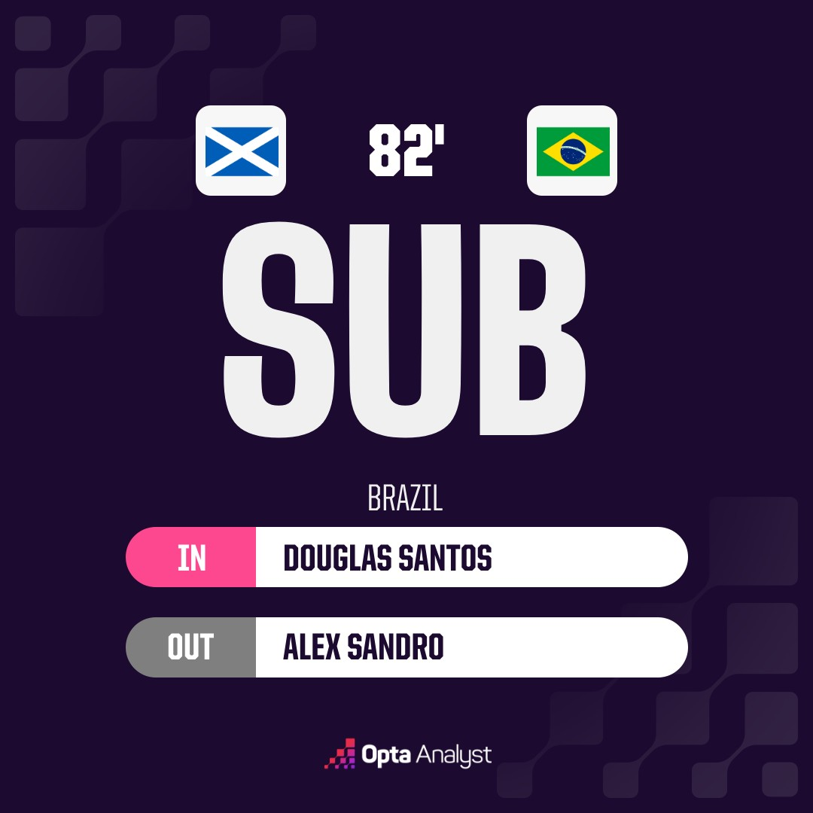
82'
Substitution! Endrick replaces Rayan for Brazil as the manager shuffles the pack. Can Endrick make an impression as this match continues?
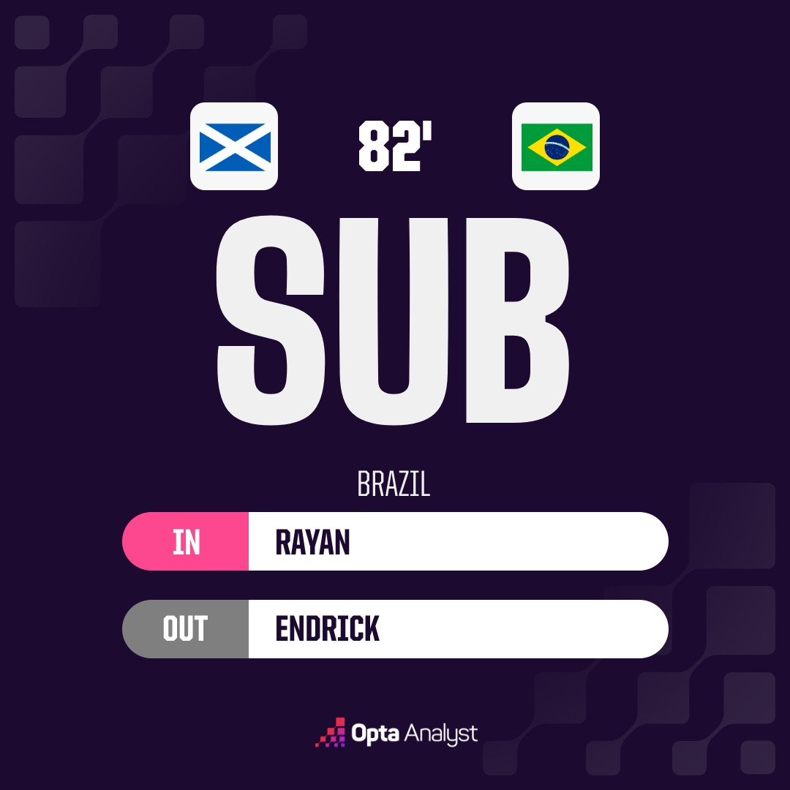
82'
The Scotland manager is looking to the substitutes’ bench, bringing on Anthony Ralston in place of Nathan Patterson. Will the change make a difference? Let’s find out!
81'
What a chance! That should really have been another goal for Brazil, who would have extended their lead had Vinícius Júnior kept their composure, but instead Scotland survive that opportunity. Can they make their luck count?
79'
A rash challenge from Rayan, who sends John McGinn tumbling, giving Scotland a free-kick. It is not in a threatening position, but it gives them a chance to get back on the ball.
79'
Brazil win a corner after Vinícius Júnior sees a shot diverted wide by Angus Gunn. Can Brazil make this opportunity count, or will Scotland defend this?
78'
A foul from Danilo on John McGinn sees Scotland win a free-kick, but it is not in a dangerous position, so Brazil should be confident they can defend it easily enough.
77'
Masterclass in game management from Brazil. They're making Scotland chase ghosts with these patient passing moves, content to keep the ball until the final whistle.
76'
The Brazil manager is looking to the substitutes’ bench, bringing on Neymar in place of Matheus Cunha. Will the change make a difference? Let’s find out!
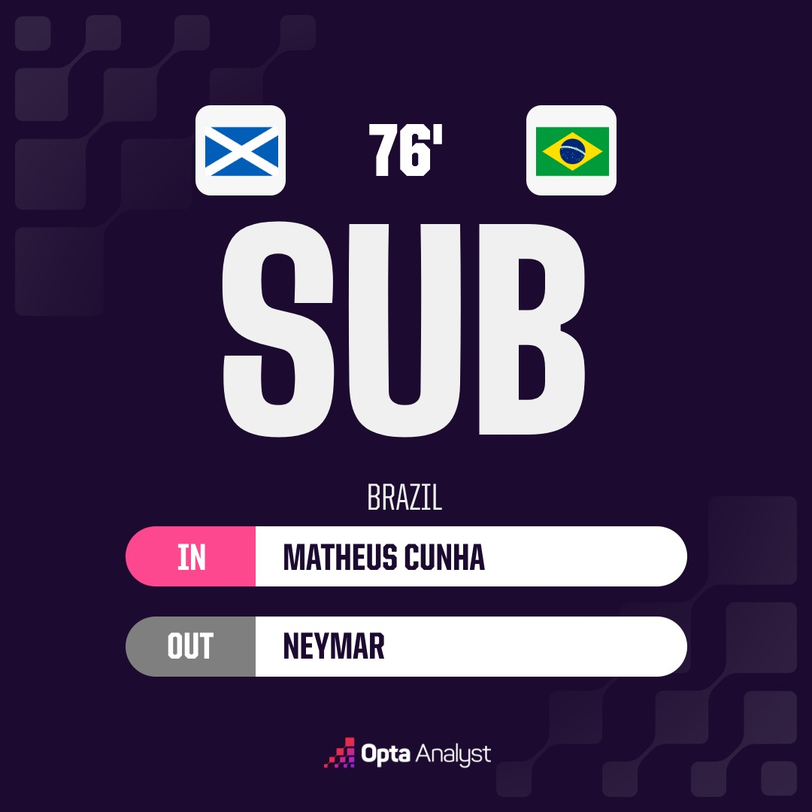
76'
No luck! Lawrence Shankland takes on a shot that, had they got it right, might have been set to test the goalkeeper, but instead it is sent off target and Brazil come away unscathed.
75'
Plenty of the ball in the last quarter-of-an-hour of this match for Scotland, but still Brazil stand firm, despite having had only 33.60% of the ball in that period. Can Scotland make their possessional dominance count?
72'
MISS! A shot from Scott McTominay ends up being off target. They might have done a bit better with that one, but it remains Scotland 0-3 Brazil.
72'
MISS! A shot from Lawrence Shankland ends up being off target. They might have done a bit better with that one, but it remains Scotland 0-3 Brazil.
72'
Danilo goes in on John McGinn and concedes a foul. The free-kick is not in a particularly dangerous area from Brazil’s viewpoint, though.
66'
Substitution! Gabriel Martinelli replaces Lucas Paquetá for Brazil as the manager shuffles the pack. Can Gabriel Martinelli make an impression as this match continues?
66'
With 25 minutes left to play, it’s a good chance to check in on the shot count. Brazil have mustered 16 so far, with 7 of those landing on target. On the other hand, Scotland have gotten 7 of their 3 of attempts on target.
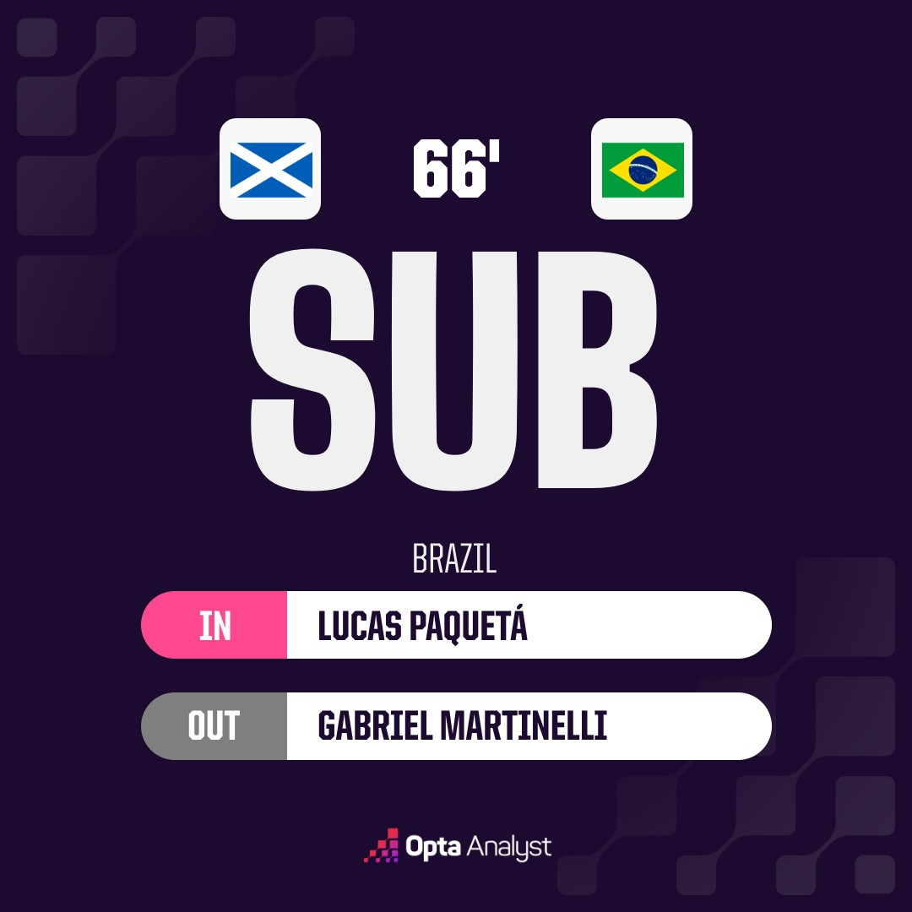
65'
Substitution! Fabinho replaces Casemiro for Brazil as the manager shuffles the pack. Can Fabinho make an impression as this match continues?
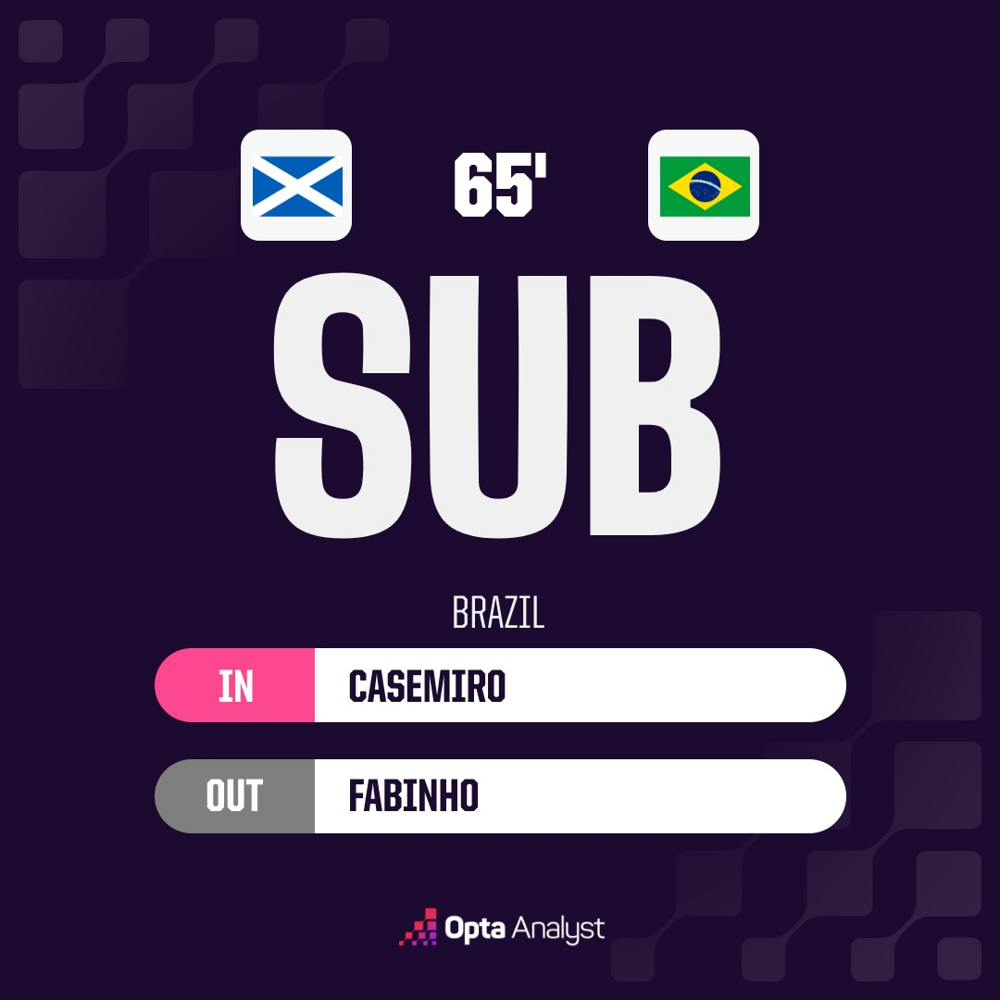
65'
The Scotland defence steps up in time and there is a frustration for Vinícius Júnior, who thought they were through until the flag goes up to signal offside.
64'
SHOT! Scott McTominay manages to get a shot off from inside the area, but although it was heading in, they cannot get enough on it to beat Alisson Becker, who makes the save.
64'
CORNER! The pressure is building for Scotland as they win a set-piece after Lewis Ferguson's attempt is blocked by Alisson Becker and diverted out of play.
62'
Yellow card! Danilo will have to be careful from now on after they are cautioned.
62'
A free-kick in a dangerous position now for Scotland, after a foul from Danilo on Kieran Tierney. Can Scotland make Brazil pay for that rashness from Danilo?
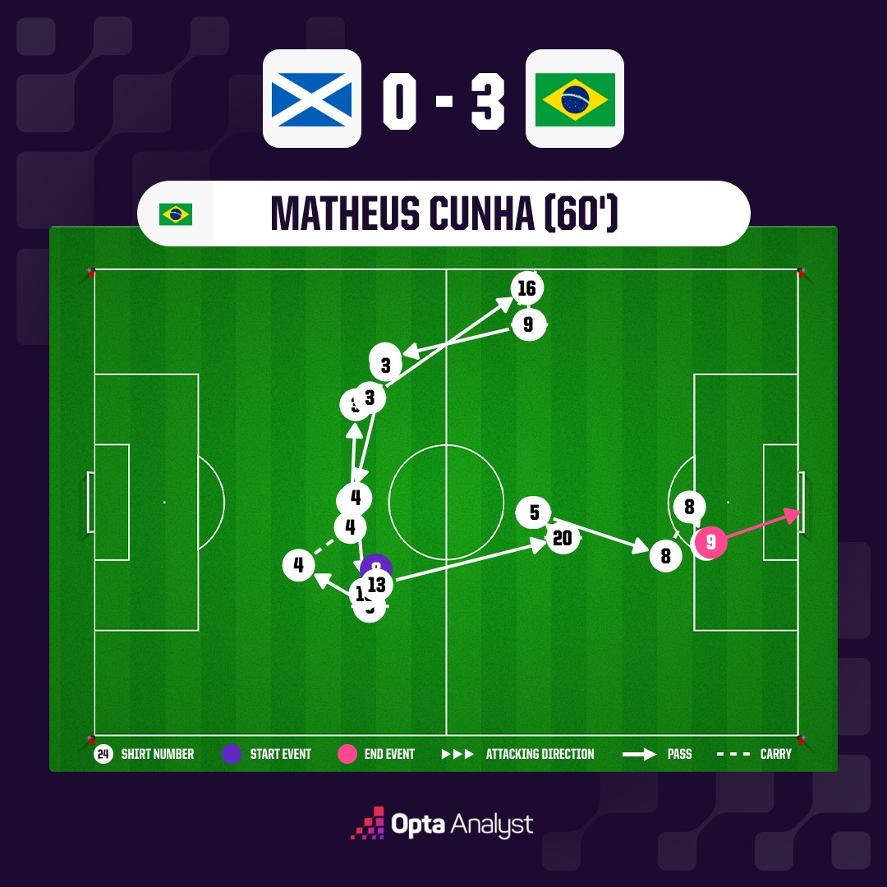
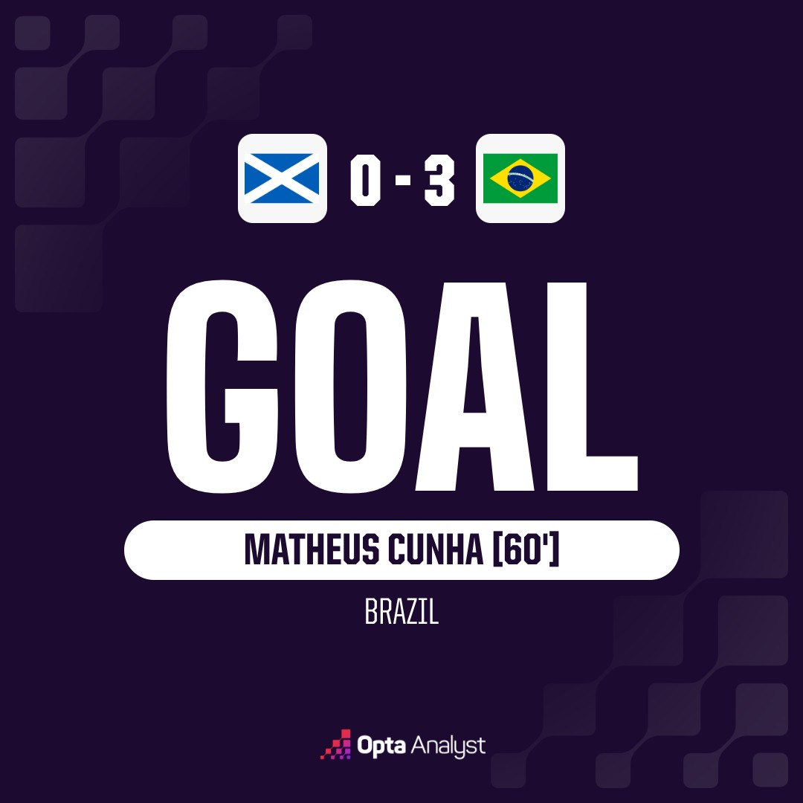
60'
Bruno Guimarães has assisted his third goal in the 2026 FIFA World Cup.
60'
Matheus Cunha has attempted 5 shots, his highest total in a single match in the FIFA World Cup.
60'
Is that game over? Brazil are now well ahead, having extended their lead to 3 goals thanks to Matheus Cunha’s effort. It’s now 3-0, and Scotland face an uphill battle to get back into it.
60'
Matheus Cunha has scored his third goal in the 2026 FIFA World Cup.
60'
Free-kick! A foul from Lawrence Shankland on Casemiro. It is well away from Scotland’s goal, so it is unlikely to result in a chance for Brazil.
59'
That is a disappointing effort from Lucas Paquetá, who went for glory but got their attempt wrong, and the shot sailed off target. A frustrating moment for Brazil.
59'
Shot blocked! Matheus Cunha unleashes an attempt at goal, but the ball does not reach its target thanks to Scott McKenna, who makes a solid block to stem the danger – for now.
57'
A free-kick to Brazil, as Ben Gannon-Doak goes in and fouls Lucas Paquetá. However, Scotland will not mind giving one away in this area too much, with plenty of distance to their goal.
56'
Free-kick! A foul from Scott McTominay on Lucas Paquetá. It is well away from Scotland’s goal, so it is unlikely to result in a chance for Brazil.
55'
Despite the early setback, Scotland are beginning to find some rhythm. Can they turn this possession into pressure?
54'
Vinícius Júnior has attempted 5 shots, his highest total in a single match in the FIFA World Cup.
54'
SAVE! A shot from outside the box by Brazil Vinícius Júnior was heading in, but Scotland Angus Gunn keeps it out with a smart stop.
54'
Brazil are controlling the tempo beautifully in this second period - another sequence of 20+ passes as they make Scotland chase shadows and preserve their advantage.
51'
MISS! Vinícius Júnior fluffs their lines, and will Brazil be made to pay for that miss? Scotland could have been down and out if that attempt had gone in, but at least they have not fallen even further behind in this contest.
50'
Kieran Tierney goes in on Rayan and concedes a foul. The free-kick is not in a particularly dangerous area from Scotland’s viewpoint, though.
49'
Save! A big stop from Alisson Becker, who reacts to keep out Scott McTominay's attempt from inside the area.
46'
Andy Robertson appears to have sustained an injury, and is unable to carry on. They make way for Kieran Tierney.
53'
Brazil are unbeaten in their last 6 FIFA World Cup matches when leading at half-time (W5, D1) dating back to 2nd July 2010 against Netherlands (L1-2).
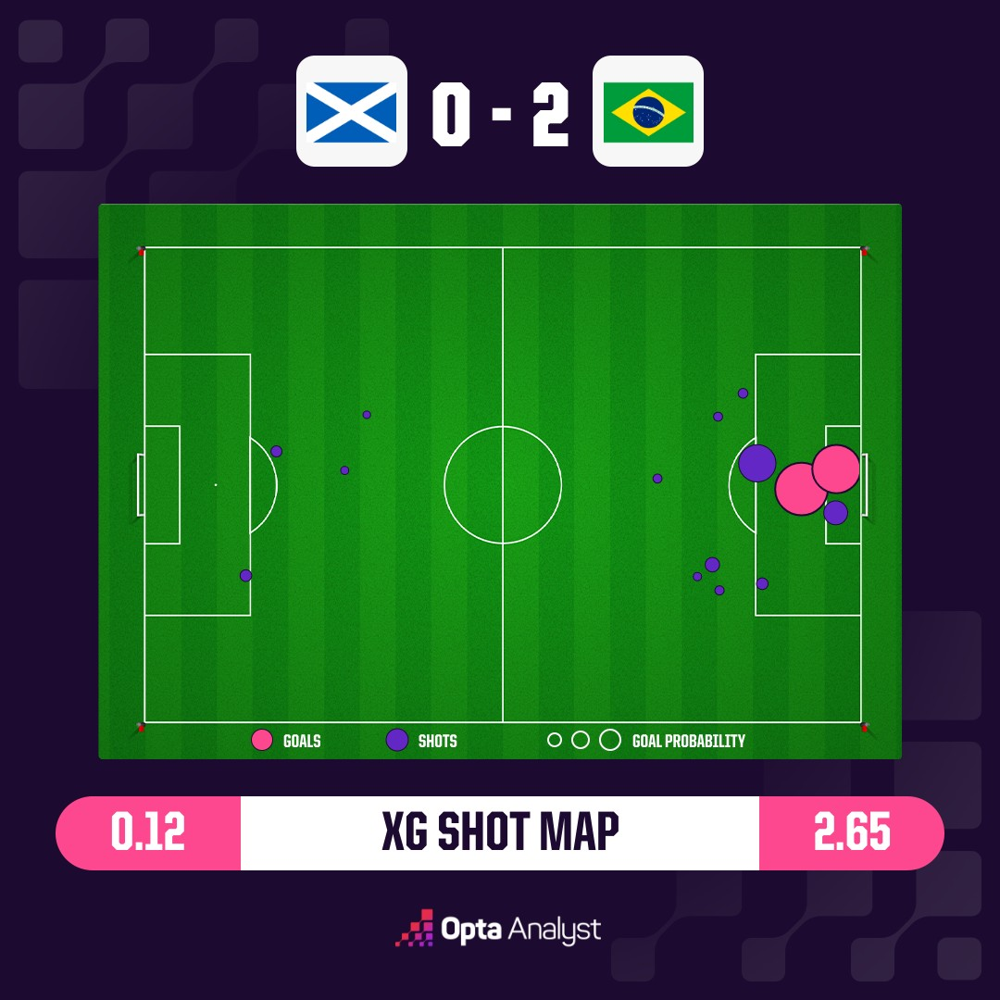
45+7'
HALF-TIME: Scotland 0-2 Brazil. An intriguing first half comes to a close with Brazil going in ahead at the interval here at Miami Stadium.
45+7'
MISS! The score remains 2-0, with Scotland relieved after Brazil’s Douglas Santos goes for goal but sends their attempt off target. Not one to write home about, that one.
45+6'
An opportunity for Brazil to extend their lead goes begging, as Rayan is unable to convert from a good opening. Will they live to regret that miss?
45+6'
That might have been going in! A fantastic block from Marquinhos, who gets in the way of a goal-bound effort from Ben Gannon-Doak. Would the goalkeeper have been beaten? We will never know.
45+5'
Casemiro goes in on John McGinn and concedes a foul. The free-kick is not in a particularly dangerous area from Brazil’s viewpoint, though.
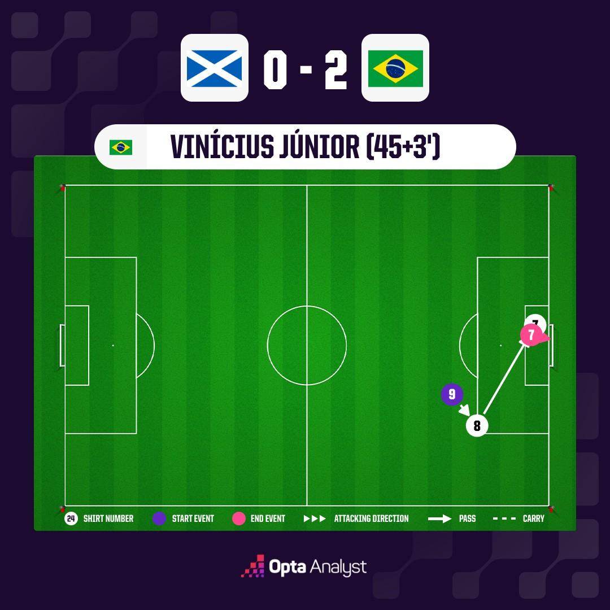
45+3'
Bruno Guimarães has assisted his second goal in the 2026 FIFA World Cup.
45+3'
Vinícius Júnior has scored his fifth goal in the FIFA World Cup.
45+3'
GOAL! Brazil have extended their lead! It's Vinícius Júnior who has got the goal, and Scotland are now two goals behind, with Brazil now in a strong position to record a victory.
45+2'
A rash challenge from Nathan Patterson, who sends Vinícius Júnior tumbling, giving Brazil a free-kick. It is not in a threatening position, but it gives them a chance to get back on the ball.
45+2'
A chance goes begging as Ben Gannon-Doak gets off a shot that does not hit the target. They might have done better with that one, but instead it is a goal-kick to Brazil.
45+1'
Scotland are struggling to find any rhythm while chasing the game. Five minutes without creating anything meaningful - they need to up the intensity soon or this could slip away.
45+1'
OFF THE LINE! That is fantastic defending from Lewis Ferguson, who is well placed to make a vital intervention and clear Matheus Cunha’s attempt off the line.
44'
This is a team playing with assurance - Brazil string together a long sequence and look determined to take a lead into the interval.
42'
That is a disappointing effort from Matheus Cunha, who went for glory but got their attempt wrong, and the shot sailed off target. A frustrating moment for Brazil.
41'
Scotland have not had a shot on target so far in this game.
38'
MISS! A shot from Rayan ends up being off target. They might have done a bit better with that one, but it remains Brazil 1-0 Scotland.
36'
BLOCKED! That was close. Kenny McLean got off a shot, which was heading in, but Casemiro was on hand to make a vital intervention. Great block!
36'
Great defending from Brazil, who are staying organised and winning key battles to preserve their lead.
35'
A rash challenge from Lewis Ferguson, who sends Vinícius Júnior tumbling, giving Brazil a free-kick. It is not in a threatening position, but it gives them a chance to get back on the ball.
33'
Free-kick! A foul from Jack Hendry on Bruno Guimarães. It is well away from Scotland’s goal, so it is unlikely to result in a chance for Brazil.
33'
Corner! The ball goes behind and now Scotland will aim to deliver a good ball into the penalty area and test that Brazil defence, which has been frustrating them in recent minutes.
33'
A chance goes begging as Lewis Ferguson gets off a shot that does not hit the target. They might have done better with that one, but instead it is a goal-kick to Brazil.
31'
Corner! Scotland are pushing for a goal and now they have an opportunity from this set-piece.
30'
No goalmouth action for some time now, with neither team having had a shot in the past 10 minutes. Will there be a moment that changes things soon? Brazil have seen plenty of the ball, however, with 58 per cent of the possession in their favour during that period.
30'
Brazil's defense is looking formidable early on, calmly and authoritatively dismantling opposition attacks.
25'
Brazil have had plenty of the ball in the last 15 minutes, with 67.90% possession compared to just 32.10 % for their opponents. However, there’s not been any goal to come from that possessional dominance just yet.
24'
VAR changes the decision! After a check, the video official believes the referee’s original call was wrong, and so the decision is overturned.
24'
We are going to VAR. The game has stopped for now with the assistant referee in the video booth now set to review the incident. Will the decision be altered?
22'
A foul from Vinícius Júnior on Jack Hendry sees Scotland win a free-kick, but it is not in a dangerous position, so Brazil should be confident they can defend it easily enough.
22'
Scotland may be behind, but they’re battling hard defensively to stop the gap from widening. A gritty response at the back.
20'
MISS! The score remains 1-0, with Scotland relieved after Brazil’s Vinícius Júnior goes for goal but sends their attempt off target. Not one to write home about, that one.
12'
That is a disappointing effort from Matheus Cunha, who went for glory but got their attempt wrong, and the shot sailed off target. A frustrating moment for Brazil.
11'
BLOCKED! That was close. Bruno Guimarães got off a shot, which was heading in, but Scott McKenna was on hand to make a vital intervention. Great block!
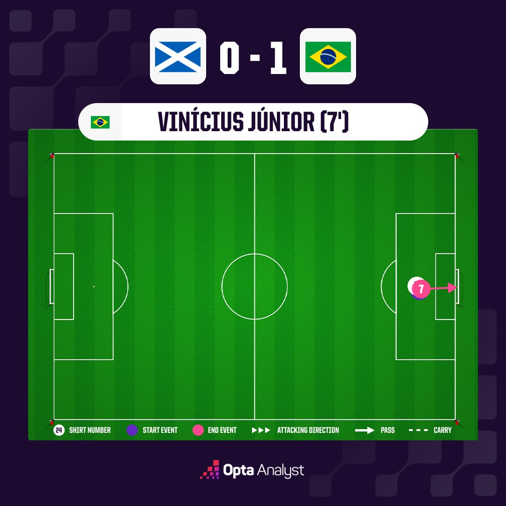
7'
Rayan has assisted his first goal in the 2026 FIFA World Cup.
7'
Brazil have avoided defeat in their last 12 matches when scoring first in the FIFA World Cup, since a 1-2 loss to Netherlands on 2nd July 2010.
7'
Vinícius Júnior has scored his third goal in the 2026 FIFA World Cup . He has now scored in his last 3 games in the competition (3 goals in total).
7'
GOAL! That is 1-0 to Brazil! It has not taken long for the first goal of the game to arrive, with Vinícius Júnior finding the back of the net to put Brazil in front. That is just the start the neutral would have wanted to see, with plenty of scope for more goals now.
7'
BLOCKED! That was close. Casemiro got off a shot, which was heading in, but Kenny McLean was on hand to make a vital intervention. Great block!
6'
Confident start by Brazil, knocking it around with purpose and keeping control in the opening phase.
5'
It’s been tight so far, and Brazil are making sure it stays that way with strong defensive discipline and well-timed clearances.
4'
Confident start by Scotland, knocking it around with purpose and keeping control in the opening phase.
1'
KICK-OFF! And here we go! We are up and running in this clash between Scotland and Brazil at Miami Stadium. Stay tuned for all the action as it happens!
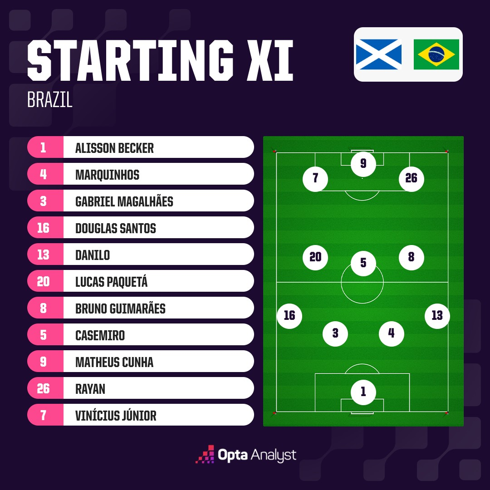
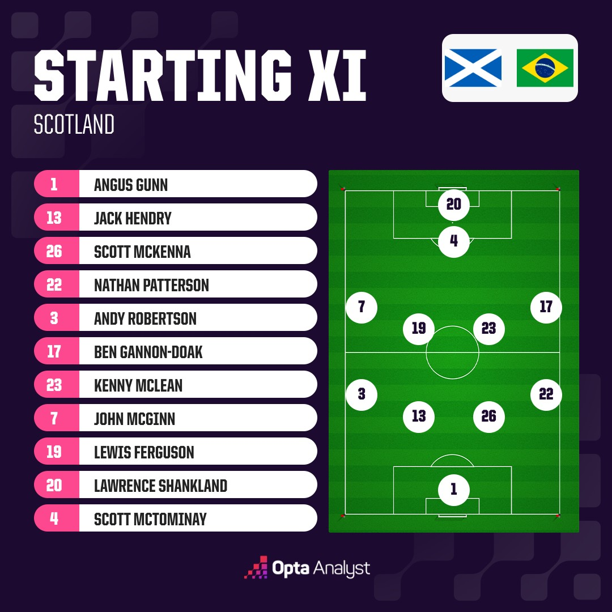
Scotland play Brazil for a FIFA World Cup group stage match at Miami Stadium on Wednesday with the Brazilian side looking to clinch a place in the Round of 32.
Scotland's last group stage match saw them beaten for the first time in the competition this season 1-0 by Morocco on June 19. In six games this year, they have three wins and three losses.
Brazil won for the first time in the competition this year in their last group stage game on June 19, beating Haiti 3-0 at Philadelphia Stadium, improving their unbeaten streak to five. Matheus Cunha led the team with a brace. In 2026, they have won four, drawn one, and lost one.
Brazil are atop the group on four points, while Scotland's three points place them third. Brazil are currently in line for the Round of 32, while Scotland are out of the knockout round places but still on for a place in the round of 32.
Morocco are second in the group on four points, well-positioned to advance to the Round of 32. Haiti are in danger of elimination, sitting fourth on zero points.
In the last encounter between the sides in March 2011, it was Brazil who won 2-0.
Scotland have been led by John McGinn in World Cup play. He is their only scorer with one goal. Brazil's leading players going forward have been Vinícius Júnior and Cunha, who have each scored twice in this World Cup campaign. They are tied for fourth in the competition's scoring charts.
Brazil have scored in 10 straight contests across all competitions. They haven't been shut out since a World Cup Qualifiers meeting with Bolivia in September 2025.
In their last six matches in all competitions, Scotland have won three and lost three. The Scottish side scored nine and conceded four over that period, scoring first in two of the six contests. A majority of their goals (six) came in the first half, while their opponents netted three times in the first 45 minutes. The Brazilian side have won four, drawn one and lost one in their last six. The Brazilian side scored 16 and conceded seven over that stretch, netting first in four of the six. They had eight goals in the first half, while their opponents netted four times before the break.
-
General
Possession 46.0% 46.00753.99354.0% Possession lost in defensive half 28 281717 Possession lost in middle third 31 312525 Duels 80 807878 Duels success rate 36.3% 36.2562.82162.8% Aerial duels 19 191919 Aerial duels won 26.3% 26.31673.68473.7% Successful dribbles 2 21111 Fouls won 11 111010 Offsides 0 011 Corner awarded 7 777 -
Distribution
Passes 500 500605605 Long passes 33 332727 Long passes proportion (%) 6.6% 6.64.4634.5% Passing accuracy 90.0% 9093.22393.2% Passes in opponents' half 237 237335335 Passing accuracy in opponents' half (%) 85.2% 85.23291.9491.9% Total passes in the final third 93 93131131 Passing accuracy in final third (%) 76.3% 76.34483.96984.0% Forward passes 292 292348348 Forward passes (%) 58.4% 58.457.52157.5% Through balls 0 033 Final third entries 58 586868 Penalty area entries 32 322626 Total open play crosses 15 1566 Crosses 23 231212 Crossing accuracy 39.1% 39.1316.66716.7% -
Attack
Goals 0 033 Shots 14 142121 Shots on target 5 599 Blocked shots 3 355 Headed shots 3 311 Shots outside the box 4 477 Shots inside the box 10 101414 Shots accuracy excluding blocked shots 45.5% 45.45556.2556.3% Shooting accuracy 35.7% 35.71442.85742.9% Key Passes 10 101818 -
Defence
Tackles 12 121414 Tackles success rate 66.7% 66.66742.85742.9% Clearances 13 132424 Interceptions 2 21313 Recoveries 33 334848 Attacking third recovery 4 433 Defensive third recovery 23 232626 Midfield third recovery 6 61919 Recoveries in attacking half (%) 12.1% 12.1216.256.3% -
Discipline
Fouls conceded 10 101111 Yellow cards 1 122 Red cards 0 000